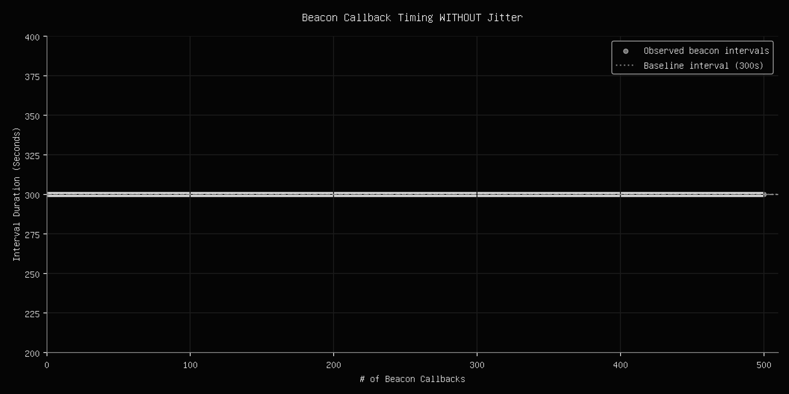
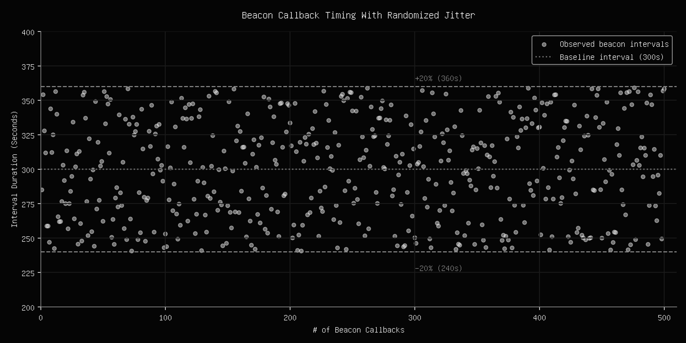

██ ▄█▀ ██▓███
██▄█▒ ▓██░ ██▒
▓███▄░ ▓██░ ██▓▒
▓██ █▄ ▒██▄█▓▒ ▒
▒██▒ █▄▒██▒ ░ ░
▒ ▒▒ ▓▒▒▓▒░ ░ ░
░ ░▒ ▒░░▒ ░
░ ░░ ░ ░░
░ ░
╓ ╖ ═╣ Blog Entry 02: Deobfuscating C2 Beacon Jitter ╠══════════════════════════════ ╙ ╜
While working through the CRTO certification from Zero Point Security, the mechanics of beacon jitter had been scratching my brain the right way for some reason. I wanted to see what actually happens to those intervals when you map them out over a longer timeline, so I did a bit of research.
In Command and Control (C2) operations, an operator dispatches a beacon to a compromised machine. The beacon periodically calls home to a team server to retrieve queued commands. Even within a noisy enterprise network handling thousands of outbound requests per second, a beacon with a fixed callback interval can eventually stand out. Over time, this behavior forms a recognizable pattern that defenders can use as a signal for detection.
This is where jitter comes into play. Jitter introduces a variation into the callback interval, typically by randomly shifting it within a configured range. In C2 frameworks such as Cobalt Strike, jitter is commonly implemented as a straightforward, percentage-based modifier applied on top of a baseline callback rate.
╓ ╖ ═╣ Misconceptions ╠═════════════════════════════════════════════════════════════ ╙ ╜
A common misconception is that jitter acts as a magic tool to erase a beacon's footprint entirely, and masking its network traffic to become perfectly indistinguishable from human browsing.
The reality is that jitter simply makes fingerprinting a beacon more difficult, not impossible. A real user browsing the web moves in truly irregular patterns, pauses for hours at a time, and goes offline during lunch breaks and night time. A jittered beacon, by contrast, operates on a continuous loop regardless of business hours, and cannot mimic human behavior 1:1. Because it runs 24/7, every callback steadily populates the same bounded probability distribution until the upper and lower bounds stand out.
╓ ╖ ═╣ Visualizing Jitter Over Time ╠═══════════════════════════════════════════════ ╙ ╜
To examine how repeated observations reveal an underlying statistical distribution, consider 2 distinct beacon profiles:
1. Strictly Periodic: A fixed 300 second interval with 0% jitter.
2. Bounded Jitter: A 300 second base interval with ±20% jitter (240s to 360s range).
The first beacon represents a default, unmodified callback loop. Every callback lands precisely on the 300 second mark without variance. In network logs, this pattern is easily detected.
Click to expand images.

The second beacon introduces a ±20% jitter. Adding randomness initially breaks up the rigid 300 second pattern, spreading callback times randomly, making short observation windows look far less suspicious.

However, the scatter plot highlights the problem with standard percentage jitter. While it does eliminate the fixed timing problem, it introduces a new problem: fixed boundaries. Because the random function picks values strictly between 240 and 360 seconds, long term analysis of the beacon's callbacks will fill in a dense rectangular box as seen above. Instead of getting caught by the original rigid 300 second callback pattern, the beacon now will be eventually caught by an equally rigid floor and ceiling. Ironic!
Bypassing this statistical signature which appears over time requires moving beyond the method of standard percentage-based jitter, and toward more dynamic sleep models.
╓ ╖ ═╣ Conclusion ╠═════════════════════════════════════════════════════════════════ ╙ ╜
Percentage jitter is absolutely a bare minimum for avoiding frequency-based detections for a beacon, but is not a silver bullet. Given enough days of network logs, the hidden floor and ceiling of the beacon's traffic will eventually map itself out.
True persistence relies on designing your beacon for long-term scenarios, which isn't as easy as clicking a couple buttons. At the end of the day, it all boils down to the unique risk model of the assessment.